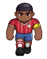

Wiki › Itens › Equipamentos › Headset do Clássico

Headset do Clássico
Equipamento · Cabeça Nível 172 Incomum
Estilo de Madri.
- Tipo
- Equipamento · Cabeça
- Nível
- 172
- Raridade
- Incomum
- Atributos
- 🛡 Defesa 16
❤ Fôlego +212
✨ Foco +90 - Preço na loja
- 🪙 360.000
- A loja paga
- 🪙 79.200
De onde vem
Quem deixa cair (1)
| Adversário | Nível | QuantidadeQtd. | Chance | Onde |
|---|---|---|---|---|
 Toureiro da Zaga | 170 | 1 | 0,30% | Madri |
Onde comprar
 Don Paco dos Churros — Madri — Plaza e Barrio 🪙 360.000
Don Paco dos Churros — Madri — Plaza e Barrio 🪙 360.000